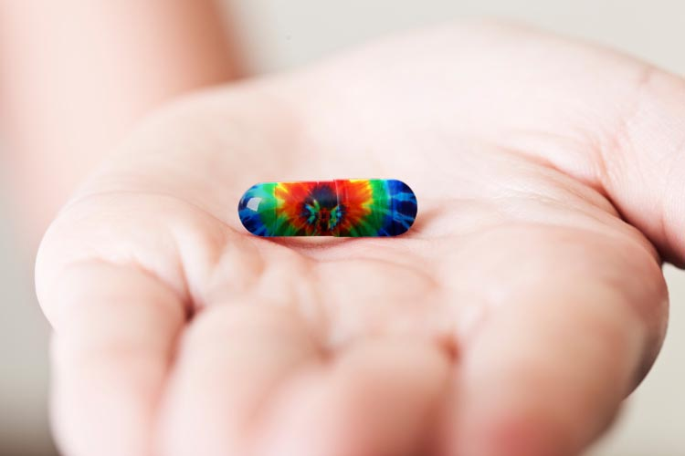

Folic Acid Benefits = Zero!
Most of us already understand that folate is responsible for the brain and spinal cord development of your baby... preventing neural tube birth defects (occurring in approximately one in 1,000 U.S. births), spina bifida, cleft lip, and cleft palate.
Also, more recently it's been publicized that it may in fact help prevent autism and heart defects from developing.
Now yes, taking a prenatal supplement... folic acid benefits may be ideal for some women that don't have the palette to be able to get enough folate from eating natural raw foods like: dark leafy greens (spinach, turnip greens, collard greens, mustard greens, parsley, romaine lettuce, etc.), sunflower seeds, asparagus, broccoli, Brussels sprouts, bok choy, cauliflower, beets, squash, okra, celery, tomatoes, oranges, grapefruit, pineapple, papaya, bananas, melons, berries, cooked beans or animal liver (organic grass fed: turkey, chicken, calf, etc.)... whew what a mouth full!
And most people will have you believe that folic acid, found in most prenatal vitamins, is the same as folate... but here's the truth:
Although these two terms are often still used interchangeably between medical professionals, nutrition experts, and health practitioners...
When you take the synthetic form of folate, known as folic acid, you're not getting the same nutrition.
Not at all.
Don't take my word for it though... Here's the proof:
40% - 50% of the U.S. population may be in danger...

A 2010 report states, “The more we learn about folic acid, the more it's clear that giving it to everyone has very real risks," says folic acid researcher David Smith, Ph.D., a professor of pharmacology at the University of Oxford in England.
The problem is that folic acid is seen as an absolute good, when in fact, for a large proportion of the population, it may be harmful... and that discussion isn't happening.
You see, folic acid requires several biological steps to break down into the bio-active substance (L-5-Methyltetrahydrofolate) that can actually be used by our body, whereas folate does not.
For the many people that unknowingly lack the ability to break down synthetic folic acid into its usable form, a process that occurs in the liver, the “unmetabolized” folic acid gets circulated in the blood stream, posing various health hazards.
According to many studies that were conducted on randomized control groups within the United States, Canada, Chile, and Norway, there were strong suggestions that linked an increase risk of different types of cancer, heart disease, and miscarriage when food supplies were fortified with folic acid or a daily supplement was given to some people. (source)
In other cases it’s been hypothesized that prenatal folic acid (not folate) may increase risks for having an autistic child, development of asthma, etc., but of course more research and studies need to be done. (source)
Not only that, but this toxic amount of “unmetabolized” folic acid also may possibly block the pathways for other nutrients to be absorbed and used by our body, including natural folate from the foods we eat… not fully being restored to normal for up to a period of years in some rare cases. (source)
Even amounts close to the official daily recommendation of 400 mcg may still pose a danger if we have this enzyme deficiency.
This is why a blood test can show a high level of circulating folic acid, and yet a deficiency in folate.
So please make sure you get tested to see if you have the MTHFR gene mutation, either C677T or A1298C.
What about the rest of us... we're good to take folic acid right?
Well aside from the disease preventing benefits of folate, which are not found in its synthetic counterpart folic acid (as discovered in a recent study in the Journal of the American Medical Association)…
An Irish study found that the body has trouble converting more than 266 mcg of folic acid per day. (source)
However, it's recommended for women to consume somewhere around 400 mcg several months before conception, and then around 600–800 mcg of folate per day during pregnancy and while breastfeeding (varies between individuals).
Another study published in the Journal of the American Medical Association suggested that too much folic acid might actually increase your odds of developing cancer, cause issues with the central nervous system, and increase cognitive decline (such as Alzhiemer’s disease) especially as our bodies age, and our ability to fully process folic acid declines (somewhere around 45 years of age in some cases).
Also, a high intake of folic acid (or even folate) might mask detection of vitamin B-12 deficiency in blood tests, which is just as essential towards decreasing the risk of neural tube birth defeat as folate is.
A balance between these two vitamins is needed, so taking a supplement with only folic acid (or even folate) without getting enough vitamin B-12 can be very harmful...
However in natural food these two co-exist in perfect balance. (note: zinc and choline are also just as essential for proper cell division)
The thing is even foods “fortified” with folic acid may be enough to increase risk for serious neurological problems, like Alzheimer’s disease, when an unnoticed deficiency in vitamin B-12 continues. (source)
Also, supporters of folic acid would cling to the belief that it was better absorbed by the body than folate (about 85% compared to 50%, respectively), however now there's a recent study showing that about 78% is absorbed from natural foods. (source)
Now let's flashback 60 years...

I have a question.
When was "folic acid" invented?
That would be in 1943 in New York. But it wasn't until 1998 that the U.S. decided to fortify / "enrich" processed food with this stuff.
The problem was that most Americans were substituting natural food for nutritionally baron processed food. So "fortifying" made sense from that perspective… especially when there was a proprietary incentive.
But given a natural nutritionally rich diet, like we used to eat for thousands of years, it might make sense that we don't need folic acid.
The thing is that supplements and “fortification” are an invented solution to treat an invented problem... so I propose what if we tried to re-think this and solved this problem at its source?
It's curious to see that there aren't many medical academia trying to do this, maybe because who would fund it?
I guess the fact that the process to make the synthetic type of folate being patented is part of the issue, especially when it's already in our food supply.
But the fact that the synthetic form is being promoted as equivalent to the natural food form (although is more “convenient” since it isn't heat sensitive and has a longer shelf life) is still irresponsible and dangerous.
The Take Away... What can you do?
While it’s still very important to note that folic acid did help prevent countless birth defects, since the majority of Americans still eat the Standard American Diet (SAD), which is unable to provide us with the proper nutrition we need...
Every doctor will agree that adequate folate intake from natural raw food is essential for health, whereas there's too many split emotions towards folic acid.
Now, unlike everyone else, I'm not going to say it's difficult for pregnant and nursing women to get the right amount from diet alone... instead you can be the judge of that.
If one cup of spinach (in a smoothie or salad) for lunch equals 263 mcg and one cup of boiled asparagus for dinner equals 262 mcg... that's 525 mcg right there. Not to mention snacking on other folate-rich foods throughout the day, and the fact that many "healthy eaters" like to add 2-3 cups of spinach to either a salad or smoothie, since one cup is relatively small.
It's always funny/sad for me to see how everyone is so quick to say how "hard" it is to get the required amount of folate naturally... granted if you're not used to eating healthy, you will have to train your palette to adjust, but that's certainly not as hard for most people as it's made out to sound.
Not to mention that our bodies tend to store around 500 mcg of folate, which can linger around for a few days before completely leaving.
So if you go a day consuming slightly less than 400 mcg, you typically shouldn't have to worry too much... although if you eat healthy, you probably wouldn't drop less than 400 mcg since so many natural foods contain folate.
Don't believe me, do the math at this website that lists foods rich in folate. Knowledge is power. (unfortunately that site uses the terms folic acid and folate interchangeably as you'll see, still it’s a great resource)
It's certainly worth giving it an honest try even if that means you might have to re-train your palette, wouldn't you say so?
(always check with your doctor and ask for a “neutrophilic hypersegmentation index” blood test... click here for some help picking out a prenatal folate supplement.)
How Can You Start Eating More Spinach?
This is the one thing I want you to focus on after reading this article.
Obviously there are a ton of different ways to prepare spinach for all types of palettes...
And while I could list a couple of my favorites, instead I think it will be a lot more fun if you told me what some of your favorite ways to eat raw (or lightly steamed) spinach are that might give it a new life for others... or if your really brave, how do you prepare organic, grass-fed animal liver?!
(Remember: cooking vegetables other than steaming or very quickly sauteing typically loses 50-95% of it's nutrients)
So now I open this up for discussion. I'd love to hear what you think and what some of you're favorite recipes are to get a special folate boost! So make sure to leave a comment below.
P.S. If you have a second, sharing this article with your Twitter or Pinterest followers would be a huge help. And I thank you for that! :)
Click here to learn more about the Vitamin Replacement Challenge and how it can help your pregnancy diet plan... there I plan to write an article about other natural nutrients found in food that work synergistically with folate (as well as other combinations) to help give you the biggest boost!
PREVIOUS POST: Is There Bleach in Your Tampon?
NEXT POST: Foods with Iron - "Iron Mom"